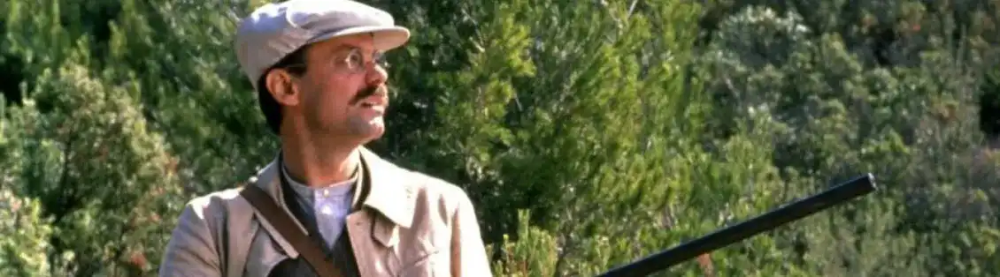

MASSILIA The Marseille of yesterday
Marcel Pagnol
How can we speak of Marseille without evoking the most striking writer of his time! Marcel Pagnol, writer of the 20th century. Originally from the Marseilles region, more precisely on the heights of Aubagne. He marked his time thanks to his different works. We all know the scene of Marius «The game of cards» with the line «you break my heart».
But let’s look at his book «La gloire de mon père» the first volume of his trilogy. Marcel Pagnol is a writer, playwright and filmmaker. In his book, Marcel Pagnol recounts his memories of living in Aubagne. His memories are brief since he lived until the age of 3 in the hill of Garlaban (hill on the heights of Marseille). In his work, he describes a version of Marseille that still seems relevant. The elements still seem current with outings to Parc Borély. To summarize this autobiographical novel by discovering the landscape and Provencal culture. This title: «The glory of my father» reflects the image that little Marcel has towards his father. The young man identifies his father as a hero, as a success story. The anecdote where his father Joseph slaughtered two birds, had an effect on the author. When he returns to the village, the latter glorifies his father, and pays tribute to him by naming his book «the glory of my father».

This book marks my childhood. Moreover, it takes place in my region, Les bouches du Rhône. Its reading is simple. The sentences are not very complex. Marcel writes his book with a vocabulary of when he was little. Reading this book allows to have a vision of a Marseille of yesterday. Despite the time gap between his writing and now ( his reading) events are still modern with ideas still in place.
My Father's Glory is the first volume of childhood memories, an autobiographical novel by Marcel Pagnol, published in 1957.
Buy the book
.webp)